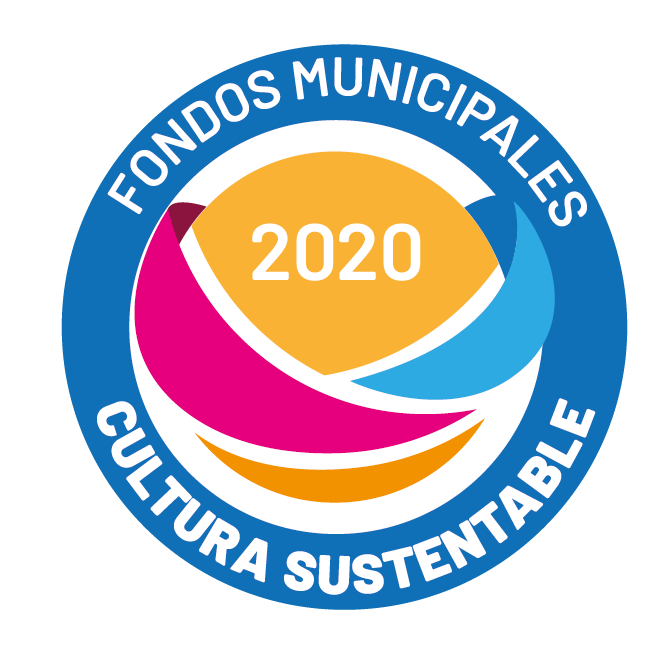
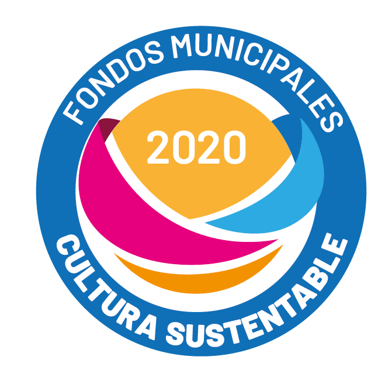

Sesión 1: Afectómetro
Realizaremos un tablero audiovisual colectivo sobre nuestra percepción de la ciudad y que tan positivo o negativo nos afectan algunos de sus elementos.
Realizaremos un tablero audiovisual colectivo sobre nuestra percepción de la ciudad y que tan positivo o negativo nos afectan algunos de sus elementos.
Accede al tablero colaborativo
Agrega más elementos que recuerdes y calificalos (20 min)
En la videollamada, comparte voluntariamente algún elemento nuevo que hayas agregado
Reflexiona con las siguientes preguntas guía: ¿Qué elementos nuevos conociste? ¿Cuáles se repitieron mas? ¿Cuáles son los mejor y peor calificados?
 
